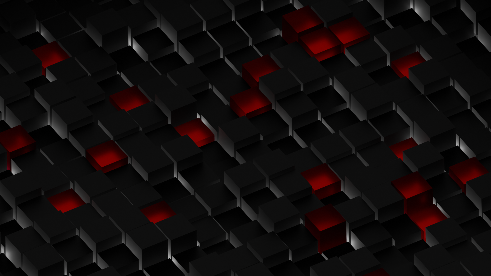

This website is a small project where I wanted to do two things:
1) Learn how to create something using HTML.
2) Have a place where I can post some of the things I made, and write about it.
Thank you for finding your way here.
Learning to use Blender was an art journey all on its own. From the many Hours were spent watching tutorials on youtube to learn basic concepts of 3D software in general. Then hundreds more creating things, scrapping things, and just playing around with the tools. When I eventually dabbled with Maya, my biggest struggle was hotkeys. I eventually found a small niche that I loved working on: Small mascot characters.
Each time I started a project, I based it on trying to challenge myself with something I wanted to learn.
This image for example was created mainly by using python coding to practice creating set patterns for the shape. The only time I used the normal UI was to create the materials and set the lights.
The motivation for this project was because I wanted a new wallpaper for my desktop.
Recently, I had been spending my daily art time trying to learn how to paint using water colors.
Another thing I picked up was a copy of 'Logic Pro' on my laptop just because I was curious about mu.